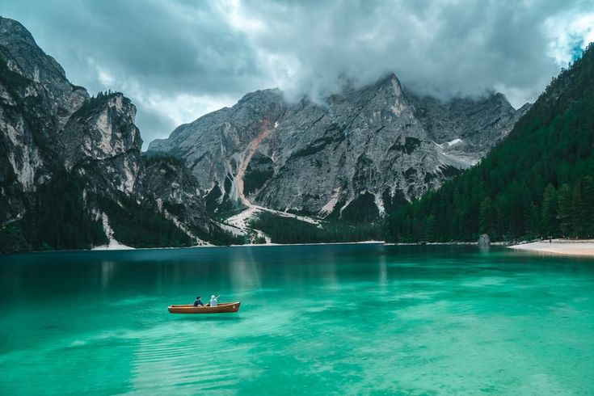
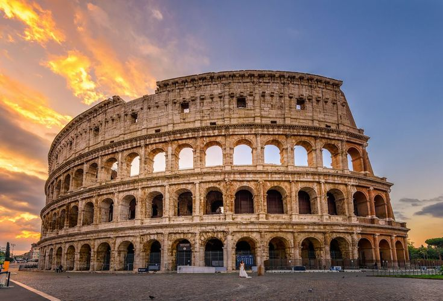

1. The "Bucket List" Adventure:
Focus: A challenging or unique trip you've always dreamed of.
Content: Detailed planning, overcoming fears, unexpected encounters, stunning photos.
Example: Hiking the Inca Trail, diving with sharks, solo backpacking through Southeast Asia.
2. The "Off-the-Beaten-Path" Gem:
Focus: A lesser-known destination with unique culture, scenery, or activities.
Content: Local tips, hidden gems, authentic experiences, stunning photography.
Example: A remote village in Italy, a hidden waterfall in Hawaii, a lesser-known island in
Greece.
3. The "Cultural Immersion" Experience:
Focus: Deep diving into the local culture, traditions, and cuisine of a destination.
Content: Interviews with locals, cooking classes, language lessons, attending festivals,
showcasing local crafts.
Example: Learning to make sushi in Tokyo, volunteering at an elephant sanctuary in Thailand,
exploring the vibrant markets of Marrakech.
4. The "Budget Travel" Guide:
Focus: Tips and tricks for traveling on a budget, including accommodation, transportation,
food, and activities.
Content: Budget-friendly itineraries, free activities, local markets, transportation hacks,
budget accommodation options.
Example: Backpacking through Europe on $50 a day, budget travel in Southeast Asia, finding
free activities in major cities.
5. The "Solo Travel" Story:
Focus: Your personal experiences and reflections on solo travel, including overcoming fears,
personal growth, and unexpected encounters.
Content: Personal anecdotes, travel tips for solo travelers, safety advice, inspiring
stories of personal growth.
Example: Solo backpacking through South America, solo travel in Southeast Asia, finding
community while traveling alone.
6. The "Family Travel" Adventure:
Focus: Tips and advice for traveling with children, including family-friendly destinations,
activities, and accommodations.
Content: Kid-friendly itineraries, travel gear for families, tips for keeping kids
entertained, family-friendly accommodation options.
Example: Road trip across the United States, family vacation in Disney World, traveling with
toddlers in Europe.
7. The "Travel Photography" Focus:
Focus: Stunning photography showcasing the beauty of your travels.
Content: High-quality photos, travel photography tips, photo editing techniques, travel
photography gear.
Example: Travel photography portfolio, tips for capturing stunning landscapes, street
photography tips.
The Travel Diaries

Travel blog content can cover a wide range of topics, from thrilling "bucket list"
adventures like hiking the Inca Trail or diving with sharks, to uncovering hidden gems
like
remote villages and lesser-known islands. You could focus on cultural immersion, sharing
experiences like learning to make sushi or volunteering at an elephant sanctuary.
Travel blog content can cover a wide range of topics, from thrilling "bucket list"
adventures like hiking the Inca Trail or diving with sharks, to uncovering hidden gems
like
remote villages and lesser-known islands. You could focus on cultural immersion, sharing
experiences like learning to make sushi or volunteering at an elephant sanctuary.

~ Solo Travel Chronicles